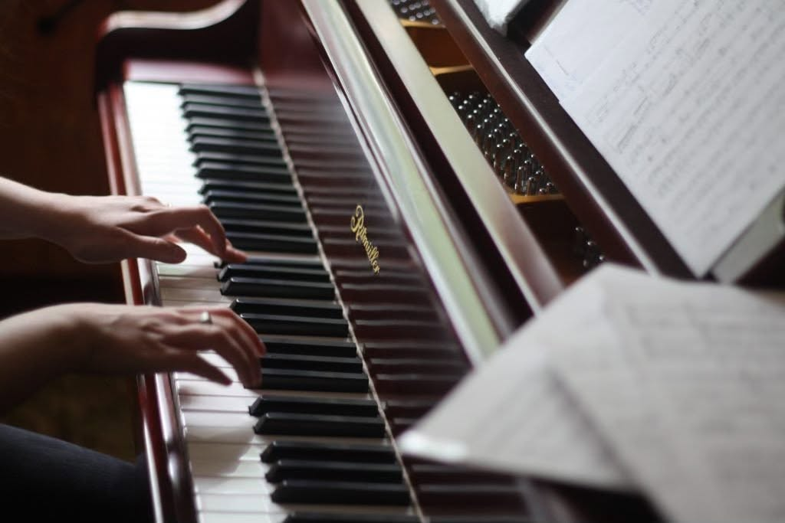

ΔΙΑΓΩΝΙΣΜΟΙ
Εθνικός Διαγωνισμός Δεξιοτήτων 2026: Βραβεύτηκαν 15 νέοι
50 φιναλίστ από 18 πόλεις διαγωνίστηκαν σε πέντε ειδικότητες. Οι νικητές προετοιμάζονται για το EuroSkills 2027.
Διάβασε περισσότερα →ΕΚΠΑΙΔΕΥΤΙΚΑ ΝΕΑ
Νέα, ευκαιρίες και εξελίξεις που αφορούν μαθητές, φοιτητές, εκπαιδευτικούς και ολόκληρη την εκπαιδευτική κοινότητα.

ΚΥΡΙΟ ΘΕΜΑ
Το Υπουργείο Παιδείας ανακοίνωσε το πρόγραμμα των Πανελλαδικών Εξετάσεων του 2027. Οι εξετάσεις για τα ΓΕΛ ξεκινούν στις 28 Μαΐου, ενώ για τα ΕΠΑΛ στις 29 Μαΐου.
Διάβασε περισσότεραΤΕΛΕΥΤΑΙΑ ΝΕΑ
ΔΙΑΓΩΝΙΣΜΟΙ
50 φιναλίστ από 18 πόλεις διαγωνίστηκαν σε πέντε ειδικότητες. Οι νικητές προετοιμάζονται για το EuroSkills 2027.
Διάβασε περισσότερα →
Μαθητικός Διαγωνισμός
Μαθητές Α΄, Β΄ και Γ΄ Λυκείου από συγκεκριμένες περιοχές μπορούν να συμμετάσχουν με ιστορικό αφήγημα, ζωγραφικό έργο ή αφίσα. Δείτε τις θεματικές, τις προϋποθέσεις και την επίσημη πρόσκληση.
Διάβασε περισσότερα →
ΠΑΝΕΛΛΑΔΙΚΕΣ
Οι υποψήφιοι που συμμετείχαν στις Επαναληπτικές Πανελλαδικές Εξετάσεις 2026 μπορούν να υποβάλουν αίτηση για την επίδειξη των γραπτών τους μέσω της πλατφόρμας του Υπουργείου Παιδείας.
Διάβασε περισσότερα →
ΠΑΝΕΠΙΣΤΗΜΙΑ
Ξεκίνησε η δήλωση και διανομή πανεπιστημιακών συγγραμμάτων μέσω του Εύδοξος. Οι δηλώσεις ολοκληρώνονται στις 15 Ιανουαρίου 2027 και η διανομή στις 29 Ιανουαρίου 2027.
Διάβασε περισσότερα →
ΕΚΠΑΙΔΕΥΤΙΚΟΙ
Δημοσιεύτηκαν οι εγκύκλιοι μεταθέσεων για εκπαιδευτικούς Πρωτοβάθμιας και Δευτεροβάθμιας Εκπαίδευσης, καθώς και ανακοίνωση για τοποθετήσεις και ανακλήσεις σε Πρότυπα και Πειραματικά Σχολεία.
Διάβασε περισσότερα →
ΕΚΠΑΙΔΕΥΤΙΚΟΙ
Όλες οι πληροφορίες για τις 2.096 προσλήψεις της 9ης Οκτωβρίου και τις 89 επιπλέον προσλήψεις μελών ΕΕΠ και εκπαιδευτικών Νοσηλευτικής. Οι νέες αναλήψεις υπηρεσίας έχουν προγραμματιστεί για τις 19–20 Οκτωβρίου.
Διάβασε περισσότερα →
ΠΑΝΕΠΙΣΤΗΜΙΑ
Ανακοινώθηκαν τα αποτελέσματα των μετεγγραφών και μετακινήσεων φοιτητών για το 2026–2027. Δείτε πού θα βρείτε το αποτέλεσμα της αίτησής σας, τα στοιχεία των εγκρίσεων και πώς μπορείτε να υποβάλετε ένσταση.
Διάβασε περισσότερα →
ΠΑΝΕΠΙΣΤΗΜΙΑ
Το Υπουργείο Παιδείας προβλέπει χρηματοδότηση έως 7,45 εκατ. ευρώ για την αγορά και διαμόρφωση κτηρίου που θα αξιοποιηθεί ως η πρώτη φοιτητική εστία της Ανωτάτης Σχολής Καλών Τεχνών.
Διάβασε περισσότερα →
ΕΚΠΑΙΔΕΥΤΙΚΟΙ
Nέες τοποθετήσεις εκπαιδευτικών Πρωτοβάθμιας Εκπαίδευσης σε ΚΕΔΑΣΥ και σχολικές μονάδες ειδικής αγωγής για το 2026–2027
Διάβασε περισσότερα →
ΣΧΟΛΕΙΑ
Η Ελλάδα επιστρέφει στο πρόγραμμα μαθητικών ανταλλαγών FLEX Global, με τις διαθέσιμες θέσεις για Έλληνες μαθητές να αυξάνονται από 10 σε 25 για το σχολικό έτος 2027–2028.
Διάβασε περισσότερα →
ΠΑΝΕΛΛΑΔΙΚΕΣ
Το Υπουργείο Παιδείας επικαιροποίησε το ρεπερτόριο του ειδικού μουσικού μαθήματος για τις εξετάσεις του 2027 και των επόμενων ετών.
Διάβασε περισσότερα →ΠΑΝΕΛΛΑΔΙΚΕΣ
Το Υπουργείο Παιδείας ανακοίνωσε το πρόγραμμα των Πανελλαδικών Εξετάσεων του 2027. Οι εξετάσεις για τα ΓΕΛ ξεκινούν στις 28 Μαΐου, ενώ για τα ΕΠΑΛ στις 29 Μαΐου.
Διάβασε περισσότερα →Αν γνωρίζεις μια σημαντική εκπαιδευτική είδηση, ένα πρόγραμμα, έναν διαγωνισμό ή μια ευκαιρία που αξίζει να μάθουν περισσότεροι νέοι, μπορείς να επικοινωνήσεις μαζί μας.
Επικοινώνησε μαζί μας